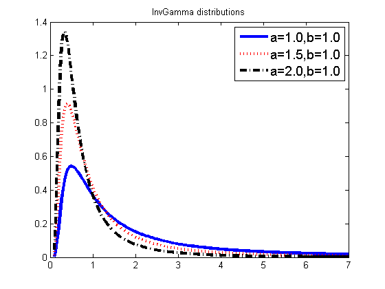

Plot Inverse Gamma Distributions
as = [1 1.5 2];
b = 1;
bs = b*ones(1,length(as));
figure;
[styles, colors, symbols] = plotColors;
legendStr = cell(1, length(as));
for i=1:length(as)
a = as(i); b = bs(i);
xs = linspace(0.1, 7, 200);
model.a = a;
model.b = b;
ps = exp(invGammaLogprob(model, xs));
style = [styles{i}, colors(i)];
plot(xs , ps, style, 'linewidth', 3);
hold on
legendStr{i} = sprintf('a=%2.1f,b=%2.1f', a, b);
end
legend(legendStr, 'fontsize', 14);
title('InvGamma distributions')
printPmtkFigure('invGamma1');
